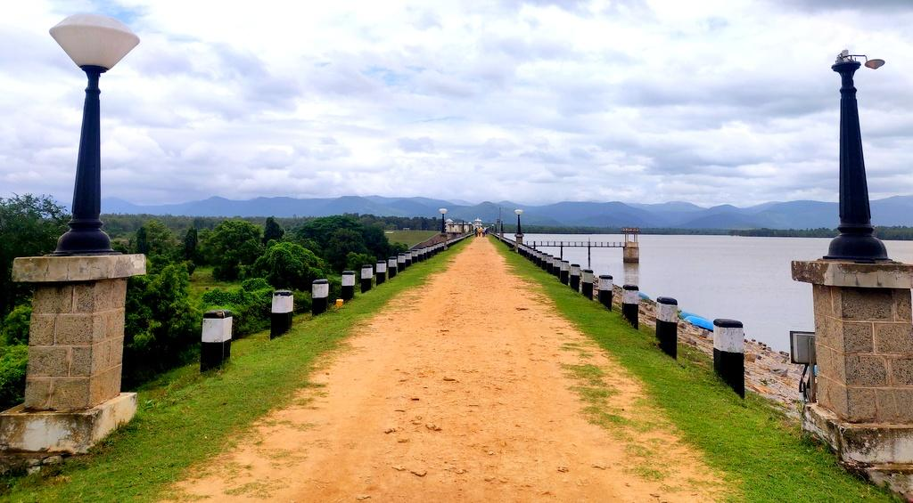
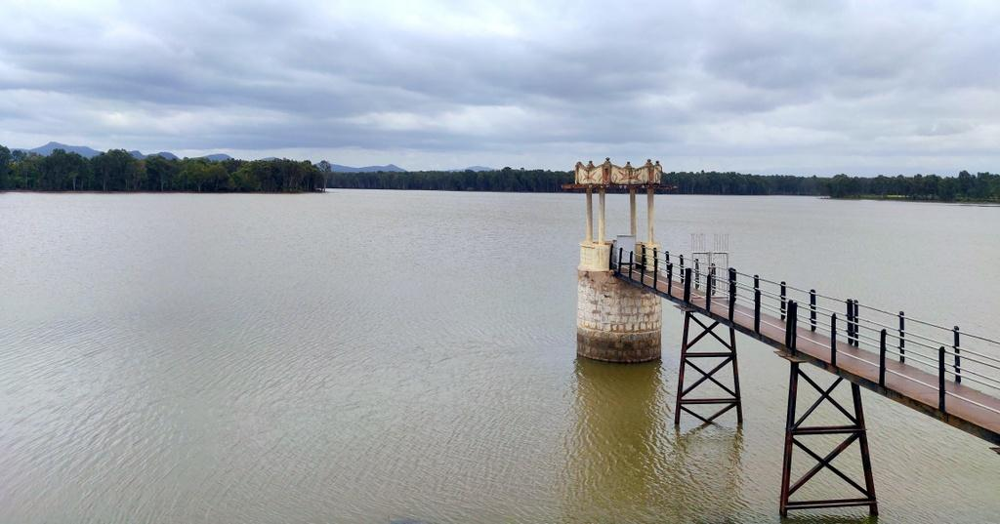
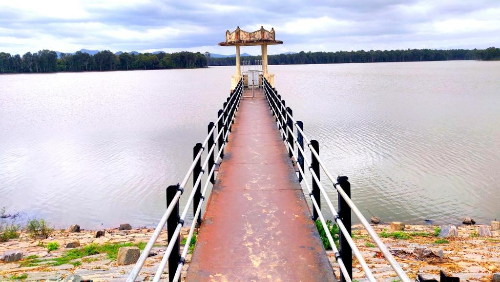

Suvarnavathi Dam
A peaceful reservoir surrounded by hills and greenery in Chamarajanagar District.
Suvarnavathi Dam is one of the beautiful tourist destinations in Chamarajanagar district. Built across the Suvarnavathi River, the dam provides irrigation to nearby villages and attracts visitors with its scenic surroundings, peaceful atmosphere and beautiful sunset views. It is an ideal place for family outings, photography and nature lovers.
Loading...
Near Chamarajanagar, Karnataka
6:00 AM – 6:30 PM
Free Entry
July – February
Parking Available
| City | Distance |
|---|---|
| Chamarajanagar | 18 km |
| Mysuru | 78 km |
| Kollegal | 42 km |
| Bengaluru | 185 km |
Distance: 18 km
⭐⭐⭐⭐☆
Distance: 20 km
⭐⭐⭐⭐☆
Distance: 17 km
⭐⭐⭐☆☆
South Indian Meals
Veg & Non-Veg Available
Breakfast, Lunch & Dinner


